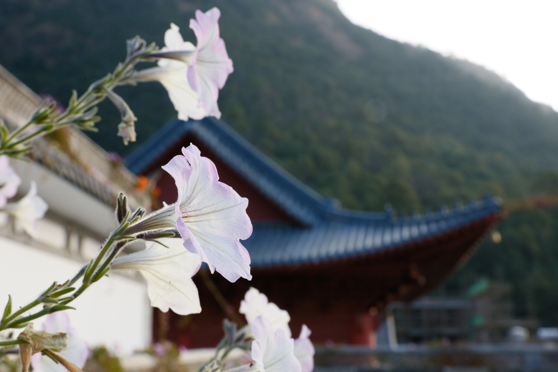
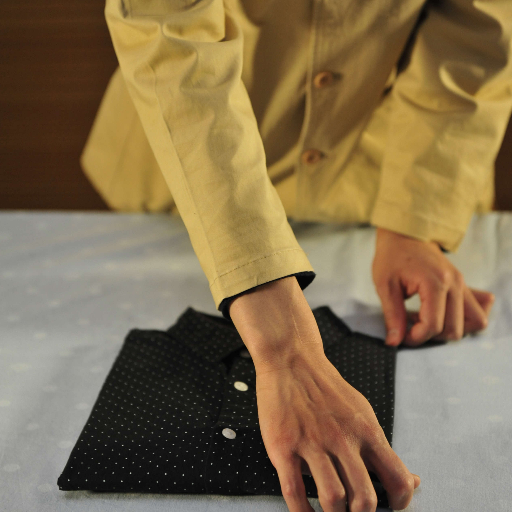
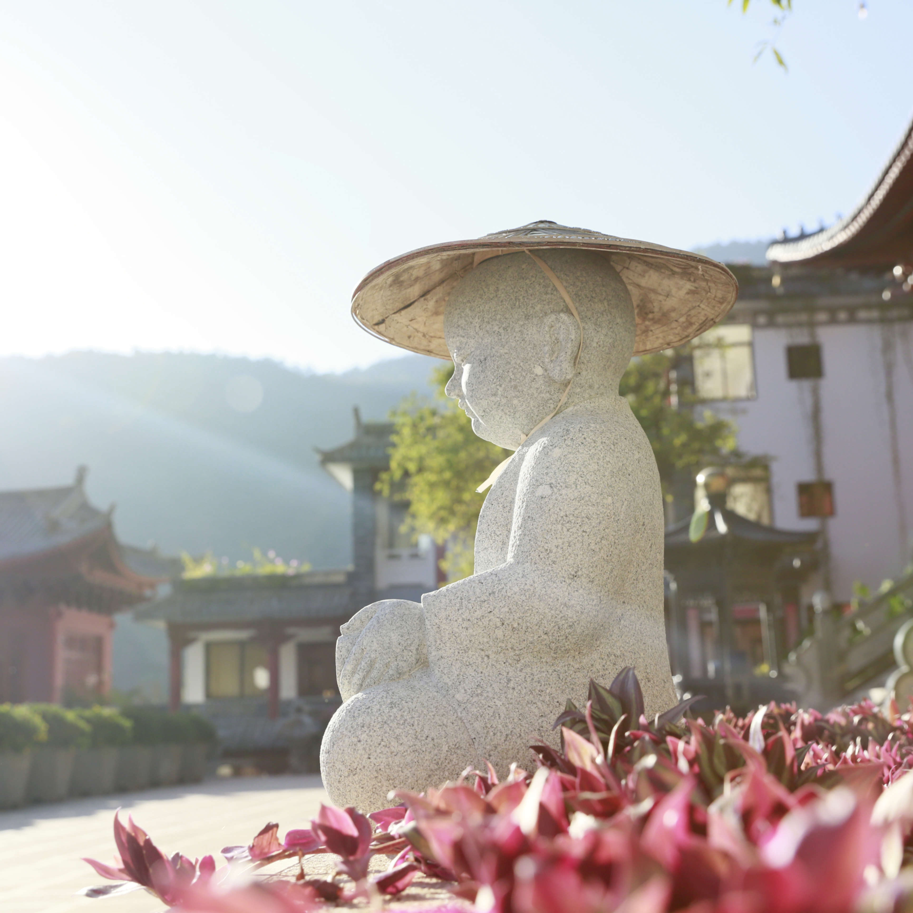
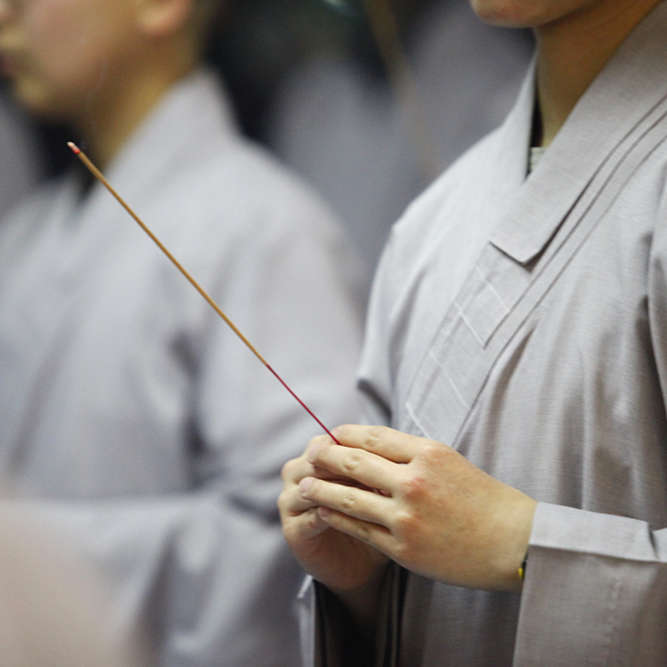
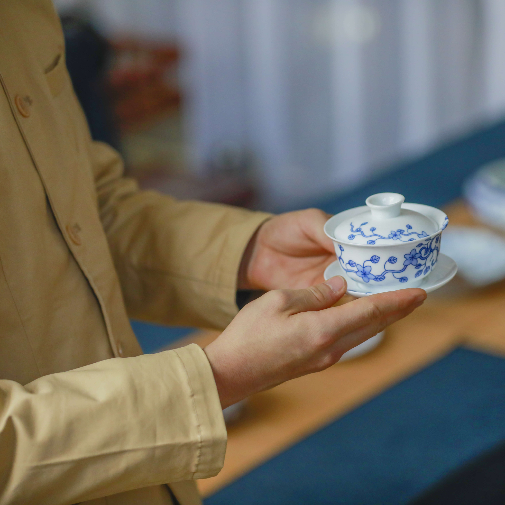
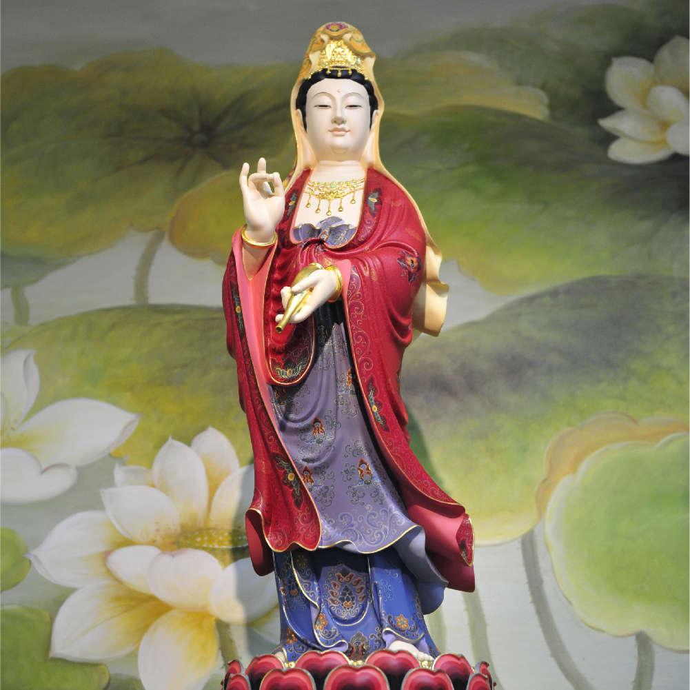

佛法大海 信為能入
「是心是佛，是心作佛。」是心是佛者，性德也。是心作佛者，修德也。修德有功，性德方显。吾人努力自求，则必能令本具之性德光明显发耳。释迦弟子，常随佛学，上求佛道，下化众生，遂建寺安僧，弘护法筵，普令众生破迷开悟，离苦得乐，祈愿天下和顺,國豐民安，盛世大同。
大士閣
佛山古刹大士阁，是著名的观世音菩萨道场，始建于明朝万历三十三年（1605年）。2008年，为令释迦正法久住，重现佛教真实的教育意义，在各级政府部门和各方人士关怀指导下，上印下信法师主持恢复重建鸡足山大士阁。大士阁为男众道场，秉承本师释迦如来的教法教义，培养弘护人才，解行并进，专修专弘净土法门。志在成为一所清净庄严，落实佛教教育的宝刹，为佛教事业的发展增光添彩。

報恩寺
报恩寺，始建于明朝嘉靖壬午年（1522年），历经沧桑，几度重修。2011年，为振兴佛法，让鸡足山璀璨的佛教文化再现光芒，在各级政府部门和各方人士关怀指导下，上印下信法师组织恢复重建鸡足山报恩寺。报恩寺为女众道场，以净土为修学宗旨，志于建成一所真正修学的道场，恢复寺院丛林讲经教学之传统，培育解行并重、道学俱优之弘护人才，教化众生，利乐有情，庄严国土，续佛慧命奉献绵薄之力。
今正是時
「经言：「佛言善哉！今正是时。汝应具说，令众欢喜。亦令大众，闻是法已，得大善利。」为此，我们与大众分享修学的点点滴滴和成长的适时动态，期盼能抛砖引玉，唤起共鸣，与天下志士仁人同舟共济，为净化世风，安定社会，和谐世界略尽微薄之力。
{kind=link}
{kind=link}
{kind=link}
{kind=link}
{kind=link}
{kind=link}
{kind=link}
{kind=link}
{kind=link}
{kind=link}
{kind=link}
{kind=link}
{kind=link}
{kind=link}
{kind=link}
依教奉行
绍隆佛陀正法，荷担如来家业，这是我们每一位佛弟子的使命与担当，佛法重实质，不重形式，立身行道必从落实开始，弘宗演教亦在生活处事，一切言行举止都彰显著佛陀的教诲，回归教育，回归我们生活学习的点点滴滴。





一門深入 長時薰修
清淨道場 依眾靠眾
假令供养恒沙圣，不如坚勇求正觉，愿当安住三摩地，恒放光明照一切，感得广大清净居，殊胜庄严无等伦，轮回诸趣众生类，速生我刹受安乐，常运慈心拔有情，度尽无边苦众生 我行决定坚固力，唯佛圣智能证知，纵使身止诸苦中，如是愿心永不退。

甘之若素 安之若素
贤首菩萨曾说：“柔和质直摄生德。”只有慈悲平等，质直无伪的人，才能摄化众生进入正法。付出，自己能获得清净快乐，凡是有缘人，也同样能感受那一份欢喜。天地同根，万物一体。人为三才之一，本应尊重天地万物，如同对待自己，用物我一体之心，善待生灵，进而带领万物回归安宁幸福。
以愛為食
宇宙间的万事万物，都仰仗着滋养，才能生存并散发出蓬勃生机，而我们所依赖的除了物质，更加必不可少的是「爱」，无私的大爱，让我们看清众生本为一体，无差无别，众生生命同等可贵。放下我们一念口腹私欲，通往戒杀护生、弃肉茹素，通往身心清净，和谐美满的快乐之道。
凉菜又称之为小菜，在会客聚餐时，是最先呈现在餐桌的菜点，当然也是居家用餐前的开胃小鲜。在主菜之前先上小菜，就好像人情调剂一般，先从清淡再渐渐浓厚，这便是中国饮食所蕴含之大道。
瞭解更多热菜被称为主菜，是每天都不可缺少的主菜。尤其在迎客招待时，总要展示出几道拿手好菜，让亲朋好友们尝尝鲜。热菜除了地域风俗的不同而有差异之外，即便是邻里门廊之间，每天也都会传出不同的味道。然而每一种味道的背后，必然也蕴含着每家庭世代相传的家道在其中。
瞭解更多
从人类最初发现水与火的结合，便有了“汤”的诞生。穿越过数千年的今天，各式的汤品，已融入百家餐桌，四菜之中必少不了一汤。饭前饭后一碗汤，已是我们久而不变的习惯。汤的做法，并不在于它的层出不穷，而在于一家人亲情的团聚，让美味传递着幸福感，让这种温暖永远保留在岁月的记忆当中，直到永远。
瞭解更多
美味小吃，日日都吃不腻，不是因为饿，也不是爲了解馋！吾国为餐饮大国，食之有道，饮食流变，实为文化传承，一代一代传下来，小吃也有其独特的秘方、手艺，食风者，土风也，我们在品尝之余，可以自己动手尝试一下，做过方知其中真正的味道。
瞭解更多“昔有神农授农耕，又有后稷播五种”，至如今长江、黄河更是划分出了中国独道的主食格局“南米北面”，已是成为千古不变的风俗，在不变中，更滋养了饮食艺术的升华。无论是米饭的文化、粥的工艺，还是面的花样，无一不是在今天的餐桌上为人们展现身姿。
瞭解更多聯系我們
地址：雲南省大理州賓川縣雞足山鎮大士閣報恩寺
電話：67817932
Email：amtf@xindedu.org
微信：xindedu

大士阁、报恩寺重建以来，一砖一瓦、一草一木，皆来自于众善发心，为弘护正法，为佛陀事业，更为了师长宏愿，一步步至今，方成就大众共修之庄严道场，再现清净六和道风。
账号一：5100010143473012
户名：云南宾川鸡足山大士阁
账号二：5100010140977012
户名：云南宾川鸡足山报恩寺
开户行：宾川县农村信用合作联社
汇入地址：云南省宾川县农村信用合作联社
行号：402751400010
請在匯款備註中註明捐款的用途)
匯款聯繫號碼 15750242092（核對款項敬請短信溝通）
户名：云南宾川鸡足山大士阁
账号二：5100010140977012
户名：云南宾川鸡足山报恩寺
开户行：宾川县农村信用合作联社
汇入地址：云南省宾川县农村信用合作联社
行号：402751400010
請在匯款備註中註明捐款的用途)
匯款聯繫號碼 15750242092（核對款項敬請短信溝通）